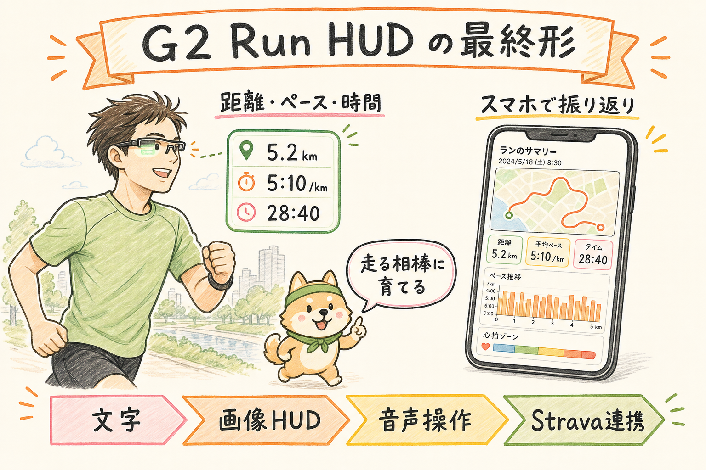
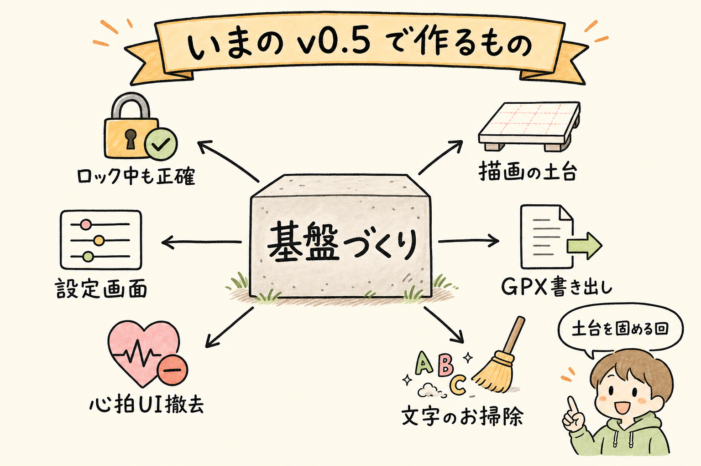

v0.5 実装中（6/6 実装済み・実機QA待ち）。
走りながらグラスに距離・ペース・時間を映し、走り終わったらスマホで振り返る「ランニングの相棒」を目指します。文字 HUD（v0.4.0）が実機で動いている段階から、v1.0 まで全 7 フェーズ・約 6 ヶ月を見込んでいます。
| フェーズ | 期間目安 | ひとことで言うと | 状態 |
|---|---|---|---|
| v0.5-spike | 1 週 | 先行検証（画像表示・マイク） | 完了 |
| v0.5 | 2 週 | 基盤固め（文字 HUD 改善 + 土台づくり） | 実装中（6/6 実装済み・実機QA待ち） |
| v0.6 | 3 週 | 画像 HUD（グラフィカル化） | 予定 |
| v0.7 | 1 ヶ月 | スマホ UI を React 化 | 予定 |
| v0.8 | 1 ヶ月 | ワークアウトのプラン作成・実行 | 予定 |
| v0.9 | 1 ヶ月 | 外部センサー・音声操作・Strava | 予定 |
| v1.0 | 1 ヶ月 | 走行後サマリ・オンボーディング・公開仕上げ | 予定 |

走りながらグラスに距離・ペース・時間を映し、走り終わったらスマホで振り返る。文字だけの表示から始めて、画像の HUD・音声での操作・Strava 連携まで備えた「ランニングの相棒」を v1.0 で完成させます。
いまは v0.4.0（文字 HUD）が実機で動いている段階です。ここから v1.0 まで、全 7 フェーズ・約 6 ヶ月（副業ペースで週 10〜15 時間）を見込んでいます。
| フェーズ | 期間目安 | ひとことで言うと | 状態 |
|---|---|---|---|
| v0.5-spike | 1 週 | 先行検証（画像表示・マイク） | 完了 |
| v0.5 | 2 週 | 基盤固め（文字 HUD 改善 + 土台づくり） | 実装中（6/6 実装済み・実機QA待ち） |
| v0.6 | 3 週 | 画像 HUD（グラフィカル化） | 予定 |
| v0.7 | 1 ヶ月 | スマホ UI を React 化 | 予定 |
| v0.8 | 1 ヶ月 | ワークアウトのプラン作成・実行 | 予定 |
| v0.9 | 1 ヶ月 | 外部センサー・音声操作・Strava | 予定 |
| v1.0 | 1 ヶ月 | 走行後サマリ・オンボーディング・公開仕上げ | 予定 |

文字 HUD の弱点を直しつつ、これからのフェーズで効いてくる「土台」を作るフェーズです。新しい見た目より、後から効く基盤を固める回と位置づけています。全 6 項目。
進捗（2026-05-31 時点）: 6 項目すべて実装済み（ビルド + ブラウザ動作確認済み）。旦那様の実機 QA（R-1〜R-10 / L-1〜L-6）を通れば v0.5.0 リリースへ。
状態の見方:
| # | 項目 | 状態 | 何のため |
|---|---|---|---|
| 1 | ロック中の挙動を強化（QA） | 実装済み | スマホをロックしても距離と時間がずれない |
| 2 | 描画ポートの抽象化 | 実装済み | v0.6 で画像 HUD に切り替えられるようにする |
| 3 | 設定画面を新設 | 実装済み | 単位・目標ペース・GPS 精度をスマホで設定 |
| 4 | GPX 書き出し | 実装済み | 走行ログを書き出して Strava 等に手動投稿 |
| 5 | 心拍 UI を撤去 | 実装済み | 取得できない心拍の「嘘表示」を物理削除 |
| 6 | 文字のお掃除 | 実装済み | 絵文字・非対応文字を表示前に除去してエラー予防 |
各項目の詳しい中身は折りたたみに入れています（正式な実装手順は docs/v0.5/implementation-plan.md）。
スマホをロックしたりアプリを背面に回すと、iOS は数秒で JavaScript の実行を止めます。すると位置取得が止まり、経過時間と距離がずれます。Wake Lock の再取得・復帰時の時間補正・Service Worker 導入（オフライン審査対策）で、ロック 5 分／10 分／30 分でもずれない状態を目指します。完了条件は手動 QA で L-1〜L-6 と既存機能 R-1〜R-10 が全て合格すること。
実装メモ（2026-05-31）: tick を runTick() に抽出し画面復帰時に呼んで凍結中の経過時間を即時補正。Wake Lock を最大 3 回 retry に強化。復帰時ステータスを「GPS 復帰中…」に。public/sw.js を network-first（オンライン時は常に最新取得＝古い UI 残存を防ぐ）で新設。実機 QA（L-1〜L-6 / R-1〜R-10、特に L-6 オフライン審査）は旦那様の確認待ち。
いまの文字描画を RendererPort という共通の入り口の裏に隠し、v0.6 で画像の描画に差し替えられるようにします。v0.5 の時点では文字描画だけ完成させ、?renderer=image を指定したときは「未実装」と表示して文字描画にフォールバックします。既存機能は v0.4.0 と完全に同じ動作を維持します。
実装メモ（2026-05-31）: src/even/renderer-port.ts（port 定義）・text-renderer.ts（text 実装）・select-renderer.ts（URL クエリ選択）を新設し、main.ts を port 経由に切替。ビルドとブラウザ動作確認済み。
単位（メートル法／ヤード法）・目標ペース・GPS 精度・表示モード初期値をスマホ側の折りたたみパネルに集約します。v0.7 で React 化する予定なので、v0.5 では素の HTML と最小限の JavaScript で作ります。設定は即時反映、再読み込み不要。
実装メモ（2026-05-31）: src/settings/（schema / persistence）を新設し companion に折り畳みパネルを追加。単位を format.ts に追加し描画全体に伝播（既定 metric で従来挙動維持）。ブラウザで単位切替が companion・グラス HUD プレビュー両方に即時反映され localStorage 永続化されることを確認。目標ペースは保存のみ（差分表示は v0.6）。
走行履歴を GPX 形式で書き出し、Strava 等へ手動投稿できるようにします。今の履歴には走行中の位置点が入っていないため、保存形式を v2 に上げて走行中に 5 秒ごとの位置点を記録する処理も含めます。古い v0.4.0 のデータは「サマリのみの GPX」として書き出せます。位置点は端末内のみに保存し、外部送信は手動書き出し時だけです。
実装メモ（2026-05-31）: 保存形式を schema v2 化（TrackPoint 追加）、走行中 5 秒ごとに位置点を記録（最大 10,000 点）。src/export/gpx.ts で GPX 1.1 に変換し、各履歴に書き出しボタンを追加。生成 GPX を xmlstarlet 相当（xmllint）で well-formed 確認済み。Strava へのアップロード地図表示は実機での書き出し → 投稿で旦那様の確認待ち。
SDK に心拍を取得する API が無いため、内蔵の心拍表示は実態のない「嘘 UI」です。グラス・スマホ両方から物理的に削除します。将来 v0.9 で外部 Bluetooth センサーから取る形で復活させる前提で、型の予約枠（externalHr）と表示枠だけ残します。
実装メモ（2026-05-31）: グラス container を 8 個から 7 個に削減し、render.ts / bridge.ts / state.ts / main.ts / スマホ側 index.html から心拍表示を物理削除。container ID 15 と型 externalHr を v0.9 BLE 用に予約。ブラウザでグラスプレビューと計測データから心拍が消えたことを確認済み。
絵文字や未対応の文字が表示処理に渡る前に取り除き、SDK のエラーを予防します。既存の cleanForG2Safe 安全ラッパー経由で適用します（even-toolkit の素の cleanForG2 は ▶◀●○ や前後の空白まで壊すため直接使わない）。RUN ▶ や全角スペースの中央寄せなど、既存表示は変えません。
実装メモ（2026-05-31）: bridge.ts の描画チョークポイント（全 text container の送信直前）で cleanForG2Safe を適用。安全ラッパーは自己完結実装のため even-toolkit 依存は追加せず。ブラウザで ▶ ● ○ が壊れないことを確認済み。
実装順序の目安は、第 1 週で「描画ポート + 心拍撤去」をまとめて、続けて「ロック中 QA」。第 2 週で「設定画面 → GPX → 文字のお掃除」、最後に統合テストと v0.5.0 リリース準備。
文字表示から画像ベースの HUD へ進化させるフェーズ。先行検証 S1（2×2 タイルでの画像表示）は実機で合格済みです。着手前に S2（画像更新の遅延計測）の実施が必須です。
着手前タスク: S2（画像更新の遅延計測。1Hz／状態変化のみ／200ms の 3 パターンを各 30 分連続で計測）。
even-toolkit/web 導入（スマホ UI のみ。グラス側は対象外）却下: シューズ管理・走行距離追跡（v1.0 以降も復活させない。再検討する場合は明示の指示が必要）。
docs/roadmap.md）を編集して docs/roadmap.html を再生成するdocs/v0.6-decision-log.md 等）docs/v0.5/watch-list.md）を読み返し、復活させる機能が無いか確認する